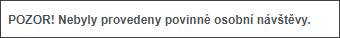
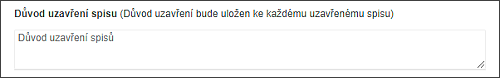
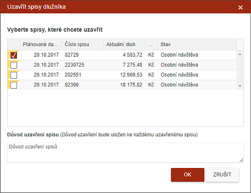

Uzavřít spis
Spis může IP kdykoliv uzavřít.
IP stiskem tlačítka uzavírá JEDEN konkrétní spis, na němž stojí. IP musí vyplnit důvod, proč spis uzavírá. Použitím tohoto tlačítka (tedy mimo procesy Zápis z OSN, Kontakt s dlužníkem) bude spis uzavřen PODMÍNĚNĚ, tzn., že se přesune na záložku UZAVŘENÉ. Na záložce UZAVŘENÉ bude spis označen stavem "Podmínečně uzavřený" a bude zde tak dlouho, dokud Supervizor SCHVÁLÍ/ZAMÍTNE uzavření spisu.
Při uzavírání systém kontroluje zda byly provedeny všechny povinné osobní návštěvy. Pokud nebyly, je na to uživatel upozorněn následujícím hlášením.

Při uzavření vždy musí uživatel zadat komentář, proč spis uzavírá.

Spis, který se uzavírá na základě procesu (Zápis z OSN, Kontakt s dlužníkem), je uzavřen automaticky (ne podmíněně), ostatní jsou uzavřeny PODMÍNĚNĚ.
Při uzavírání spisu systém překontroluje, zda jsou od tohoto dlužníka další spisy a nabídne je k uzavření. Při tomto výběru uživatel vidí, v jakém jsou stavu (OSOBNÍ NÁVŠTĚVA, KE ZPRACOVÁNÍ, DOHODA O ÚHRADĚ). Zaškrtnutím si uživatel vybere spisy, které chce také uzavřít. Záleží na uživateli, zda je všechny uzavře a záleží na Supervizorovi, zda toto rozhodnutí povolí. Tyto informace se zapíší do historie spisu a vygeneruje se zpráva pro SV.

Supervizor zkontroluje spis a rozhodne o jeho Uzavření či Vrácení uživateli. Pokud spis z nějakého důvodu vrátí, tento se dle jeho rozhodnutí objeví v záložce OSOBNÍ NÁVŠTĚVA nebo KE ZPRACOVÁNÍ.
Jakmile Supervizor potvrdí uzavření spisu, bude spis zobrazen na záložce UZAVŘENÉ pro uživatele následujících 10 dní.